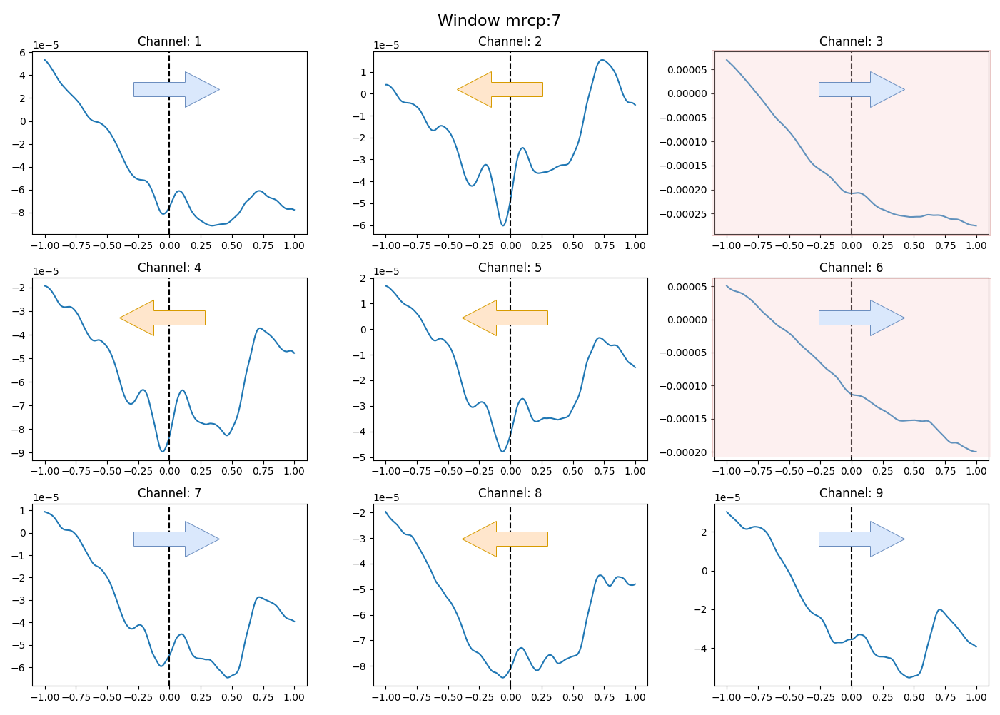

Automatic Label Creation of MRCP for Online
Control of a Robotic Soft Glove

Abstract
Recent advances in brain-computer interface (BCI)
systems have assisted in the neurorehabilitation of physically
disabled patients to regain motor skills in semi-paralyzed body
parts. Movement-related cortical potentials (MRCPs) are appealing in the BCI field as they occur naturally before movement
in electroencephalography (EEG) data and capture movement
intention. However, collecting and labeling the MRCPs is cumbersome and requires domain knowledge. We propose an automatic
labeling technique that improves the accuracy of a selection
of classifiers by up to 15% in offline experiments. To achieve
the performance increase, we identify movement onsets found in
electromyography (EMG) data, which is collected simultaneously
with the EEG data, and use these as a guide to find the peak
negativity that is a key characteristic of MRCP. We also simulate
an online environment to test the feasibility of our proposed
labeling technique, and our best model detects 11 out of 15
MRCPs with an 8.3% false positive rate and a mean delay of
0.26 s
My Contributions
The project was a collaboration between 3 people, therefore, I have decided to outline some features I worked on. I was tasked with developing the online simulation that was used during all evaluations of the project. I also developed the algorithm that was used for approximating the location of the MRCP negative peak.